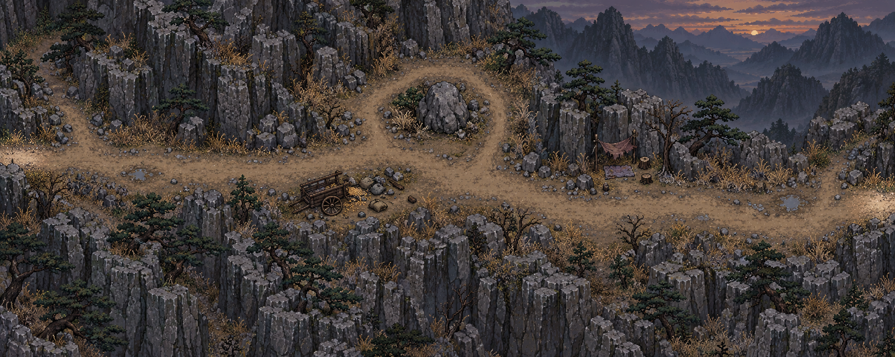
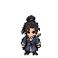
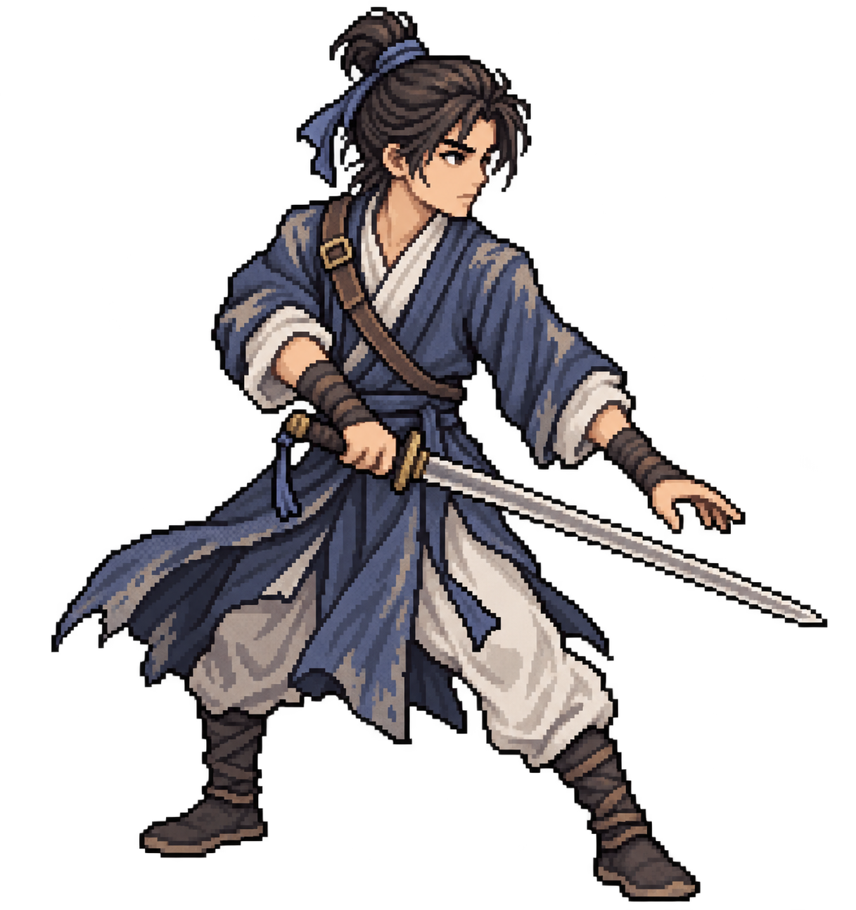

像素武侠 · 剧情探索
还剑渡 第一章
荒山驿道暮色将尽，剑指渡口


暮色将尽。师父留下的剑，指向乌篷渡。
沿山路前行青崖门旧案 · 乌篷渡口
第一章 · 雨夜粮船
一柄旧剑，一封藏在剑柄里的供词。陆照循着被掩埋的赈粮旧案，走向乌篷渡。
剧情探索 · 回合制战斗

还剑渡 · 序
还剑渡 · 第一章
沿山路寻找旧案线索，走访渡口，再去码头与程砚对质。
用方向键或 WASD 移动。靠近金色标记后，按空格调查或交谈。触屏可使用游戏里的方向按钮。
荒山驿道会遇到山贼或拦路流民。流民可以交出口粮或答应调查；选择动武会进入战斗。
按数字 1～5 选择出剑、破招、守势、用药或退走。破招能打断蓄势，守势能减伤并恢复内力。
发现线索、帮助流民和战斗胜利都能获得经验。升级后，陆照的气血、内力和招式伤害会提高。
当前没有存档。刷新会返回主界面，再次开始会从驿道起点重来。
像素武侠 · 剧情探索


暮色将尽。师父留下的剑，指向乌篷渡。
沿山路前行